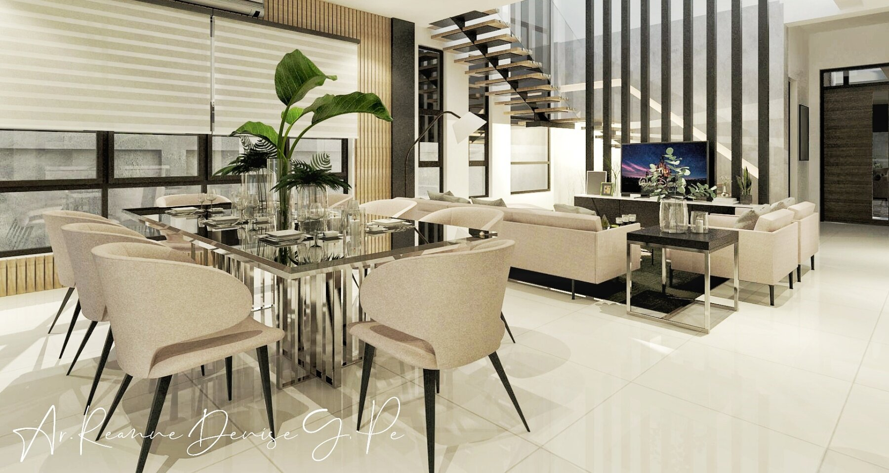
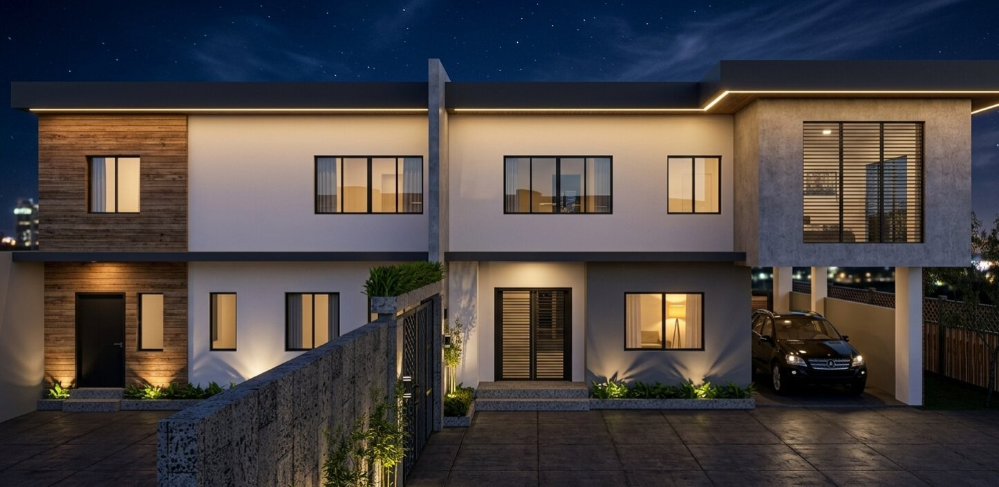
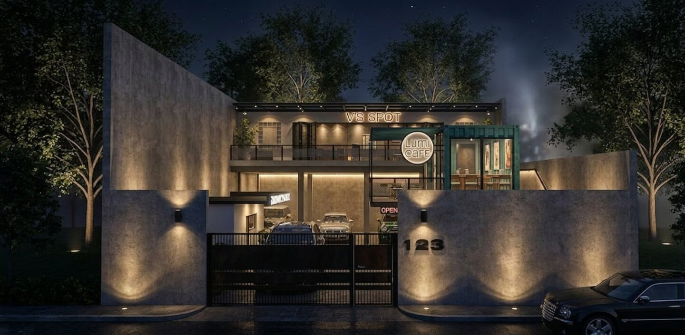
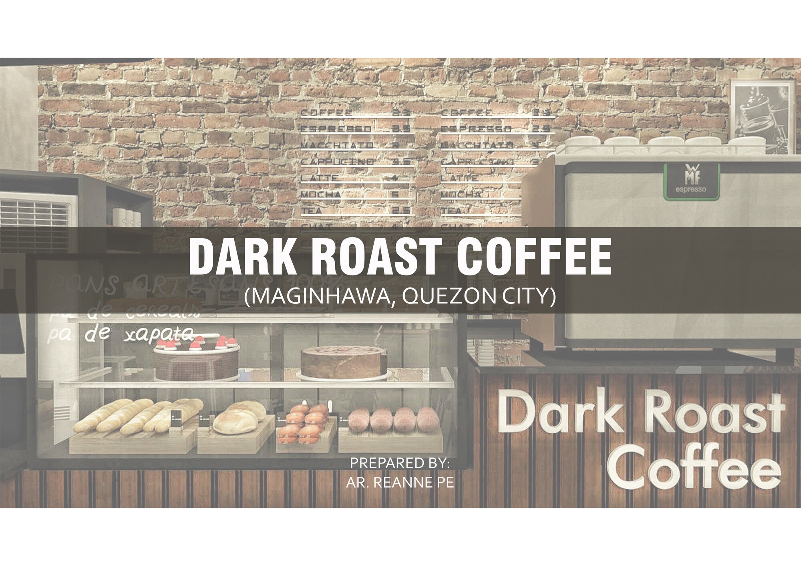

3D Visualization
Interior and exterior renderings, modeling-only support, and presentation visuals built to explain spaces clearly without over-stylizing them.
Ar. Reanne Denise Pe
Calm, presentation-ready architectural visuals for spaces people can actually imagine living in.


Core support
Interior and exterior renderings, modeling-only support, and presentation visuals built to explain spaces clearly without over-stylizing them.
Drafting, floor plans, technical drawings, detailing, presentation sheets, and full-set drawing packages that can support the transition toward construction.
Massing, facade studies, architectural problem-solving, and technical direction that help projects move from concept into practical implementation.
Featured Projects
These are placeholders for the three projects Reanne will curate more fully later. The structure is in place now so each project can expand into a richer case-study popup with captions, process notes, and grouped images.

Featured Project 01
This slot is ready for a fully curated residential interior project with final selected images, captions, problem-solution notes, and a clearer project story.


Featured Project 02
This slot is intended for a complete architectural set where drawings, plans, and supporting visualizations can be reviewed together instead of appearing scattered in the main gallery.


Featured Project 03
This slot is designed for the coffee house or another full-set interior design package with renderings, mood boards, plans, and section work kept together in one place.
Portfolio Gallery
Images are intentionally shown in a consistent card format. Clicking an image opens a grouped viewer based on the active category, so browsing stays focused instead of jumping across unrelated work.
About
Reanne Denise Pe is a PRC-licensed architect based in Metro Manila, Philippines. Her work spans residential and commercial design, architectural interiors, 3D visualization, technical drawing support, and practical coordination between design intent and construction needs.
She is strongest when a project needs both design sensitivity and technical follow-through: believable renderings, clear presentation sheets, practical drafting support, and thoughtful interior direction grounded in buildable decisions.
Software Stack
Primary production is centered on SketchUp Pro, AutoCAD, V-Ray, Photoshop, and CorelDRAW, with documentation and tracking support handled through Word and Excel when needed.
Typical Workflow
Typical Turnaround